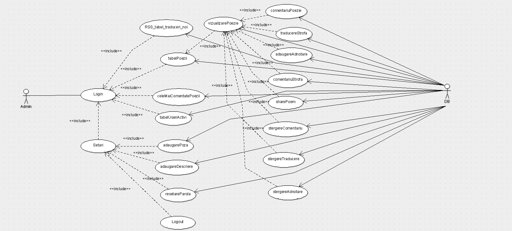
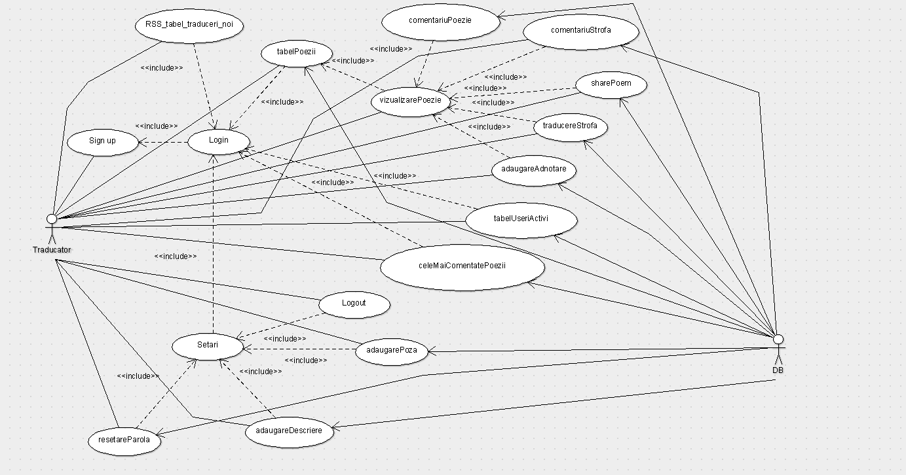
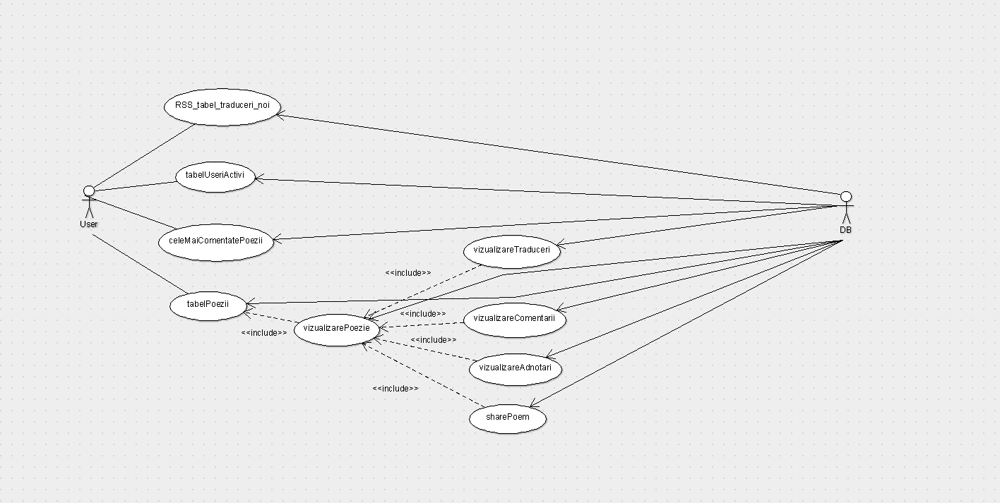

Introducere
Poem Translater este o platforma care se ocupa cu traducerea poemelor in diferite limbi. Fiecare poem are posibilitatea de a detine una sau mai multe traduceri provenite de la mai multi utilizatori care depun timp in aducerea constanta de noi traduceri. Traducerile primesc rating pentru calitatea versurilor traduse, iar cele mai bune traduceri vor fi afisate in prezentarea unui poem. In privinta celorlalte traduceri va exista posibilitatea de a le vizualiza in subsolul fiecarei strofe alaturi de comentariile si adnotarile aferente.
La accesarea site-ului utilizatorii vor putea vizualiza logo-u si un tabel cu cele mai noi poezii traduse, perioada de cand au fost adaugate si numarul de vizualizari acumulate pana in acel moment.
In poems, utilizatorii pot vizualiza un tabel cu autori si pentru fiecare un tabel cu poeziile disponibile ale acestuia. Pentru fiecare poezie utilizatorii pot vizualiza traducerea poeziei, comentariile, adnotarile si notele ce au fost adaugate. Daca un utilizator doreste sa adauge o traducere, un comentariu,o adnotare sau sa ofere note acesta are nevoie de un cont pe care il poate creea pe pagina de sign_up. Utilizatorii ce au cont deja au posibilitatea de a distribui poeme pe diverse platforme de blogging. La crearea contului utilizatorului i se va atribui un profil in care isi poate seta o poza si o descriere sugestiva sau isi poate schimba parola. Pentru cei ce au deja cont se pot autentifica pe pagina de login. Cei ce si-au uitat parola, o pot reseta pe pagina de reset_password.
In pagina community, utilizatorul poate vizualiza doua topuri, unul cu cei mai activi utilizatori si unul cu cele mai comentate poezii.
Diagramele use case pentru cei 3 actori:
Admin:
Adminul se ocupa de administrarea site-ului, de a asigura traduceri corecte, comentarii fara limbaj licentios de care traducatorii pot da dovada. Aceste are dreptul de a sterge comentarii, traduceri si adnotari. La fel ca si traducatorii, acesta poate sa traduca si el la randul lui, sa dea share la poeme, sa adauge comentarii, adnotari si sa lase un rating la o anumita traducere. Traducerile vor fi sortate descrescator dupa rating pentru a asigura tuturor userilor cele mai bune traduceri.
Traducator:
Traducatorul, la fel ca si administratorul are dreptul la a adauga traduceri, comentarii, adnotari, share si a lasa rating. Acesta poate vizualiza informatii in legatura cu cele mai noi traduceri prin intermediul un flux de stiri RSS, de asemenea poate afla informatii despre cei mai activi useri si despre cele mai comentate poezii. Traducatorul detine un cont cu care se poate loga la site, iar daca acesta doreste sa-si schimbe parola va avea posibilitatea de a face asta din profilul care contine si adaugarea unei poze de profil cat si o descriere alaturi de butonul de logout in caz ca doreste sa se deconecteze.
User:
User-ul va putea sa vizualizeze site-ul chiar daca nu detine un cont, dar acesta nu va avea dreptul la adaugarea de noi traduceri, comentarii, share sau rating, respectiv tot ce tine de profilul unui utilizator care detine un cont, insa va putea sa citeasca poezii, traduceri, comentarii si sa se informeze despre orice detalii legate de noile traduceri ale poemelor, despre cei mai activi useri sau cele mai comentate poezii.
Diagrama C4:
C1 - Software System

C2 - Container

C3 - Component

Funționalități
- signup - posibilitatea unui utilizator de a-și face un cont și de a beneficia de anumite funcționalități
- login - posibilitatea de a se conecta la contul sau.
- RSS_tabel_traduceri_noi - posibilitatea utilizatorilor de a vedea cele mai noi traduceri ce vor fi expuse via un flux de știri RSS.
- setari - accesul la adaugarea unei descrieri sau poze, modificarea parolei, cat si posibilitatea de a se deconecta.
- adaugarePoza - posibilitatea unui utilizator logat de a-și adăuga o poză de profil
- adaugareDescriere - posibilitatea unui utilizator de a-și adăuga o descriere(citat, motto,etc) la profil
- resetareParola - posibilitatea unui utilizator logat de a-și schimba parola
- logout - posibilitatea unui utilizator de a se deconecta de la contul său
- tabelUseriActivi - posibilitatea utilizatorilor de a vedea topul cu cei mai activi utilizatori
- celeMaiComentatePoezii - posibilitatea utilzatorilor de a vedea topul cu cele mai comentate poezii
- tabelPoezii - afisarea tuturor poeziilor ale poetului selectat
- vizualizarePoezie - posibilitatea de a vedea toate traducerile poeziei selectate, respectiv comentarii, adnotari, cat si distribuirea poeziei pe o platforma cum ar fi WordPress, Medium sau Blogspot
- traducereStrofa - posibilitatea de a adăuga o nouă traducere unei strofe de către un utilizator logat
- adaugaAdnotare - posibilitatea de a adăuga o adnotare unei strofe de către un utilzator logat
- comentariuStrofa - posibilitatea unui utilizator logat să își exprime părerea în legutură cu o strofă tradusă într-un comentariu
- comentariuPoezie - la fel ca funcționalitatea precedentă doar că comentariu este adăugat la întreaga poezie
- sharePoem - posibilitatea unui utilizator logat de a distribui un poem pe o platforma de blogging
- stergereComentariu - posibiliatea administratorului de a ștege comentarii( considerate neadecvate sau din alte motive) adăugate unor strofe de utilizatori sau intregii poezii
- stergereTraducere - posibilitatea administratorului de a șterge anumite traduceri adăugate de utilizatori
- stergereAdnotare - posibilitatea administratorului de a șterge anumite adnotari adăugate de utilizatori
- vizualizareTraduceri - userii, traducatorii, cat si adminii site-ului pot vizualiza toate traducerile disponibile
- vizualizareComentarii - userii, traducatorii si adminii site-ului pot vizualiza comentariile traducerilor cat si comentariile intregii poezii
- vizualizareAdnotari - userii, traducatorii si adminii site-ului pot vizualiza comentariile
Echipa:
- Băcăoanu Adriana-Bianca 2A1
- Coța Ștefan-Octavian 2A1
Impartirea task-urilor:
- Bacaoanu Adriana-Bianca se va ocupa de: sign-in, sign-up, logout, reset-password, adaugare_poza, adaugare-bio, tabelul cu cei mai activi utilizatori si tabelul cu cele mai comentate poezii, tabelul cu ultimele traduceri adaugate, tabelul cu poetii si poemele acestora.
- Cota Stefan-Octavianse va ocupa de: adaugare_comentarii, adaugare_adnotari, adaugare_rating, adaugare_traducere, share, stergereComentarii, stergereTraduceri.
Limbaje ce vor fi utilizate:
- PHP
- MYSQL
- XML - va fi utilizat pentru stocarea datelor din baza de date pentru realizarea unui flux de stiri RSS.